Part A: using a pretrained flow model (PixNerd-XXL-P16-T2I, 512×512) to denoise, generate, and edit images. No training.
Part B: training a flow matching model from scratch on MNIST.
| Parameter | Value |
|---|---|
| Part A model | MCG-NJU/PixNerd-XXL-P16-T2I |
| Part A convention | time 0 = noise, time 1 = clean image; xt = (1 − t)ε + t x1 |
| Part A settings | Euler step h = 0.02, CFG w = 7, empty prompt for the unconditional branch, base seed 180 |
| Hardware (both parts) | Colab, Tesla T4 |
xt = (1 − t)·ε + t·x1. One image of my own (my cat), one noise tensor reused at every t.
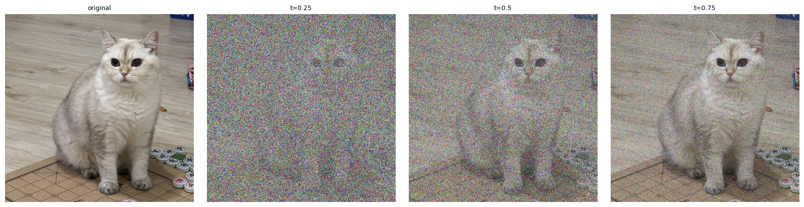
def interpolate(image, noise, t):
# x_t = (1 - t) * eps + t * x_1
return (1 - t) * noise + t * image| Parameter | Value |
|---|---|
| Image | my own photo (cat), center-cropped to 512×512, RGB in [-1, 1] |
| Noise seed | 180 |
| t | 0.25, 0.50, 0.75 |
At t = 0.25 it's almost all noise. I can only see the cat's eyes. At t = 0.75 the cat is clear, just grainy.
Gaussian blur on xt / t as a baseline.
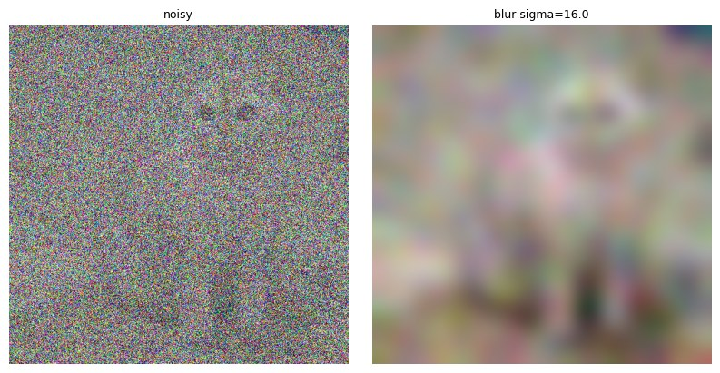
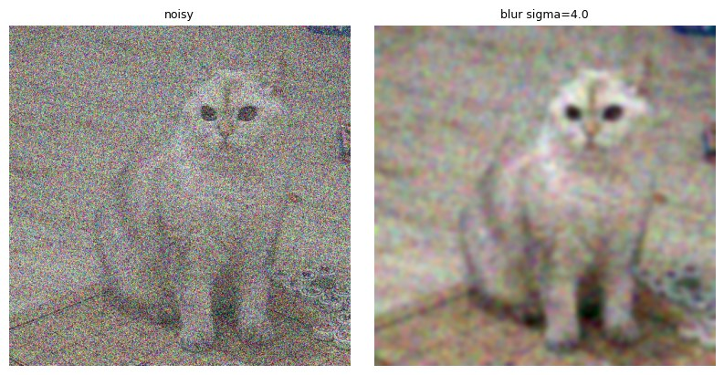
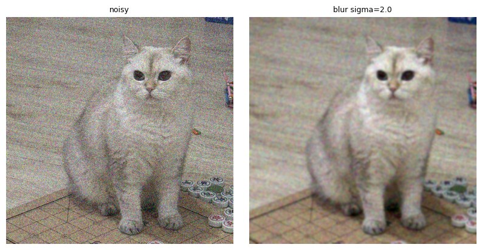
for t, x in noisy.items():
candidates = {s: gaussian_blur(x/t, [int(6*s+1)]*2, [s,s]) for s in [1.,2.,4.,8.,16.]}
sigma = min(candidates, key=lambda s: ((candidates[s]-image)**2).mean().item())
blurred[t] = candidates[sigma]| Parameter | Value |
|---|---|
| σ tried | 1, 2, 4, 8, 16 |
| Best σ at t = 0.25 | 16 |
| Best σ at t = 0.50 | 4 |
| Best σ at t = 0.75 | 2 |
| Kernel size | 6σ + 1 |
I tried five sigmas and picked the one with the lowest MSE to the clean image. The noisier the input, the bigger the sigma it wanted.
At t = 0.25 the blur is just a colored blob, since there's almost no signal left to keep. At t = 0.5 and 0.75 it removes the grain but the cat gets soft too. Blur can't tell noise from detail.
One velocity prediction with "a high quality photo", then jump to the clean endpoint: x̂1 = xt + (1 − t)·v̂.
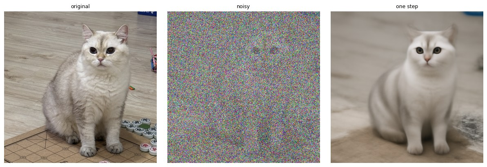
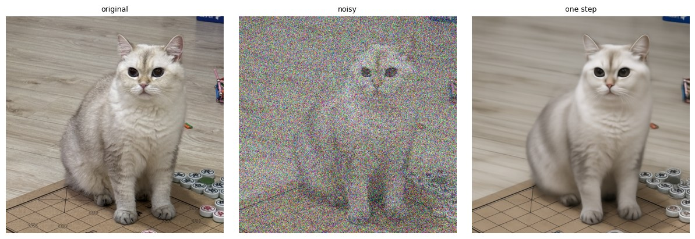
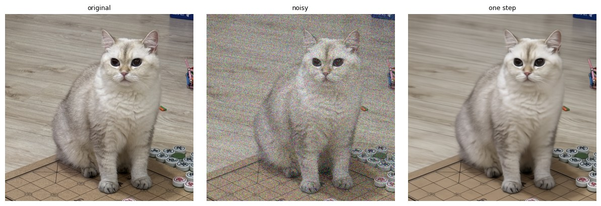
def one_step_denoise(x, t, condition, predict_velocity):
# x̂_1 = x_t + (1 - t) * v_θ(x_t, t, c)
return x + (1 - t) * predict_velocity(x, t, condition)Way better than blur. Even at t = 0.25 it gives a clean-looking cat. But it's smooth, and the cat isn't exactly the same as the original (at t = 0.25 the face and pose changed a bit, and the floor and chess board lost texture). At t = 0.75 it's very close to the original.
Predicted update (1 − t)·v̂ vs. ground-truth update (1 − t)·vgt = x1 − xt, plus a per-pixel RGB RMS error.
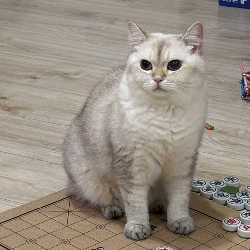
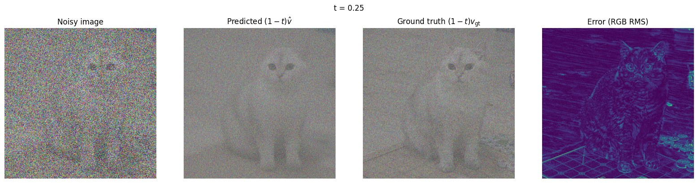
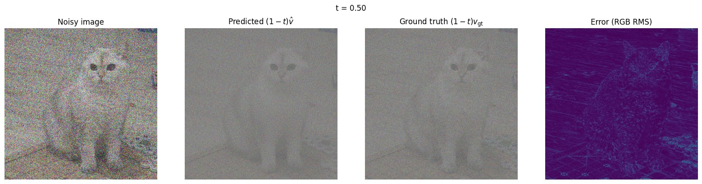
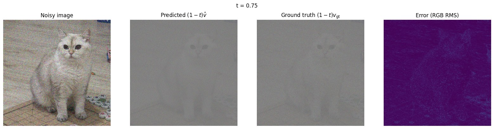
def velocity_diagnostics(x_t, t, clean_image, epsilon, condition, predict_velocity):
v_hat = predict_velocity(x_t, t, condition)
predicted_update = (1 - t) * v_hat
ground_truth_update = (1 - t) * (clean_image - epsilon)
error_map = ((predicted_update - ground_truth_update) ** 2).mean(dim=1).sqrt()
return predicted_update, ground_truth_update, error_mapEuler steps from the t = 0.50 noisy image with h = 0.02: 25 updates, last step shortened to land exactly on t = 1.
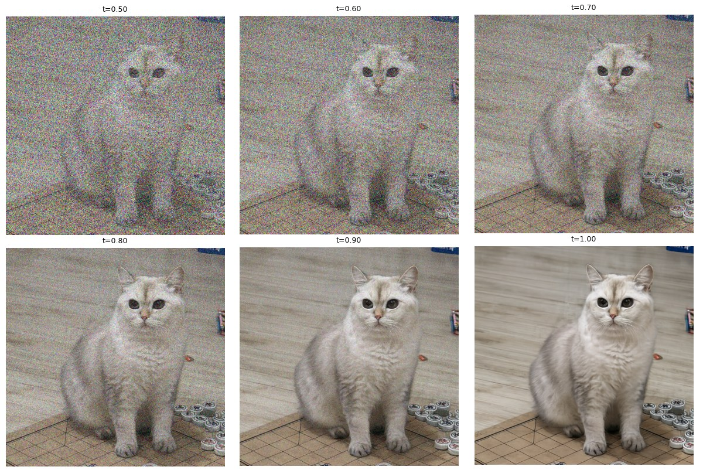
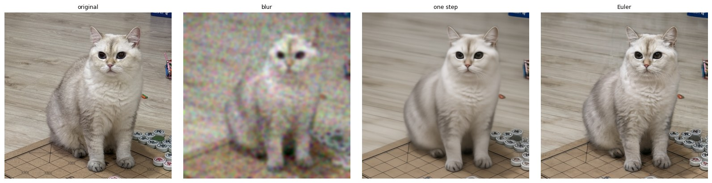
def euler_sample(x_start, t_start, step_size, velocity):
n_steps = math.ceil((1 - t_start) / step_size - 1e-6)
x = x_start
states = [(float(t_start), x)]
for k in range(n_steps):
t = t_start + k * step_size
t_next = 1.0 if k == n_steps - 1 else t_start + (k + 1) * step_size
x = x + (t_next - t) * velocity(x, t)
states.append((t_next, x))
return x, states| Parameter | Value |
|---|---|
| Step size h | 0.02 |
| Start time | 0.50 |
| Updates | 25 |
| MSE to original: blur | 0.0168 |
| MSE to original: one-step | 0.00669 |
| MSE to original: Euler | 0.00802 |
Euler looks the sharpest. It has fur, floor and chess board texture, so it looks most like a real photo. Blur is the worst and one-step is smooth.
But the MSE of Euler (0.0080) is a bit higher than one-step (0.0067). My guess is that one-step gives a smooth average that MSE likes, while Euler commits to sharp details that can be slightly different from the original.
tstart = 0 with "a high quality photo", 50 Euler updates, five different noises.
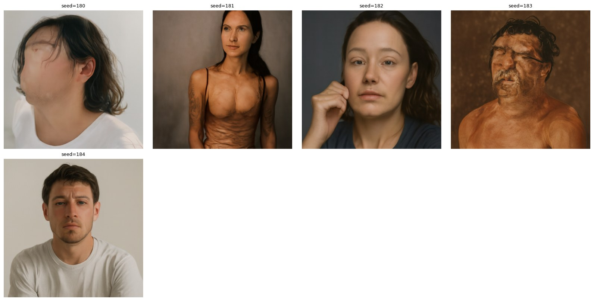
samples = {}
for i in range(5):
x, _ = euler_sample(noise(SEED+i), 0, H, lambda x, t: predict_velocity(x, t, condition))| Parameter | Value |
|---|---|
| Prompt | a high quality photo |
| Seeds | 180, 181, 182, 183, 184 |
| Steps | 50 (h = 0.02) |
Every sample is a person, mostly a front-facing portrait. So the generic prompt is biased toward people and faces. A few are also broken: seed 180 has no face, and seed 183 has a melted face.
vcfg = vc + w (vc − vu), empty prompt for the unconditional branch.
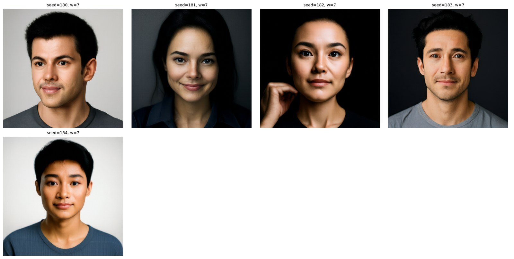
def cfg_velocity(x, t, condition, w, predict_velocity, null_condition=''):
# v_cfg = v_c + w (v_c - v_u)
v_c = predict_velocity(x, t, condition)
if w == 0:
return v_c
v_u = predict_velocity(x, t, null_condition)
return v_c + w * (v_c - v_u)
guided = lambda x, t: cfg_velocity(x, t, condition, W, predict_velocity, null_condition)
for i in range(5):
x, _ = euler_sample(noise(SEED+i), 0, H, guided)| Parameter | Value |
|---|---|
| w | 7 |
| h | 0.02 |
| Seeds | 180–184, same as 1.6 |
| w = 0 check | matches plain conditional velocity (assert passes) |
Faces are much cleaner and sharper than in 1.6. Seed 180 now has a face, and seed 182 still has a hand by the cheek, so the overall layout stays the same.
The tradeoff: the five images look more alike. All are front-facing portraits with high contrast and dark clothes, less variety.
Noise the image to a starting time, then denoise to t = 1 with CFG and "a high quality photo". Each panel: original, then seven starting times.
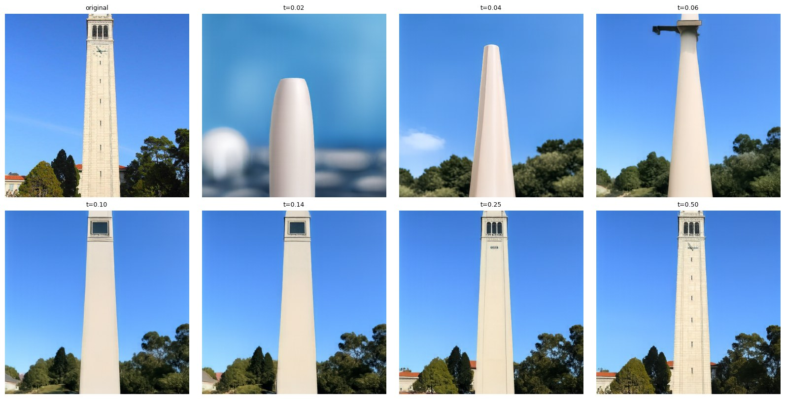
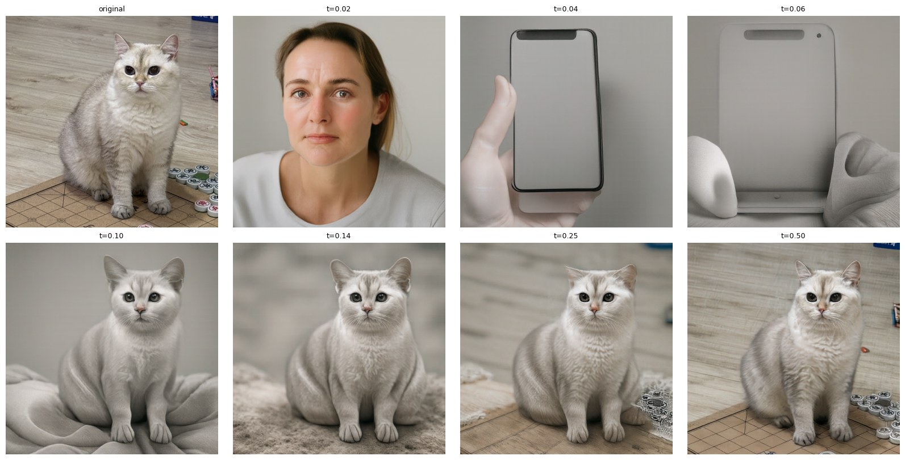
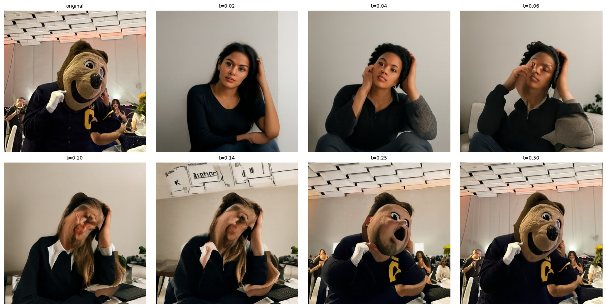
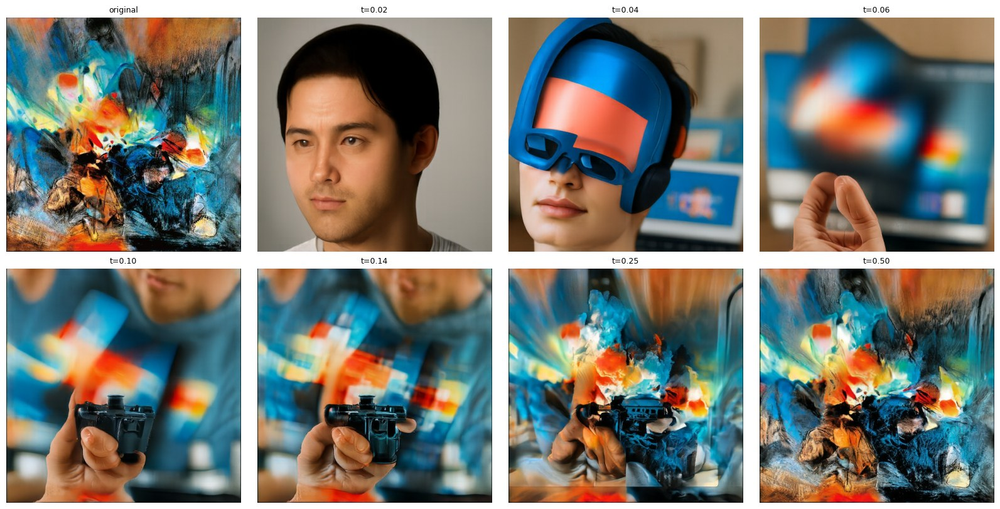
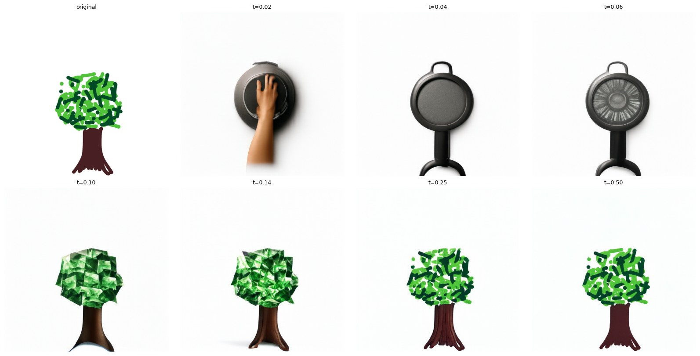
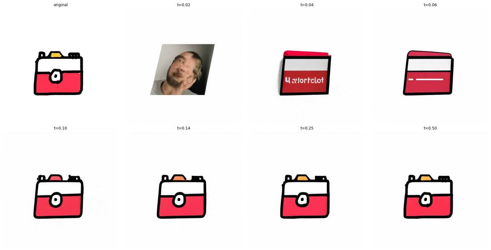
def edit(image, noise, t_start, condition, predict_velocity, w=7, step_size=0.02):
x = interpolate(image, noise, t_start)
v = lambda x, t: cfg_velocity(x, t, condition, w, predict_velocity, null_condition)
out, _ = euler_sample(x, t_start, step_size, v)
return outSmaller start time means more noise, so the model changes more. At 0.02 the output has almost nothing to do with the input: the Campanile turns into a smooth white tower, and my cat turns into a woman's portrait. At 0.25 and 0.50 the image is close to the original.
The in-between times (0.10–0.14) are the interesting ones: the cat is still a cat but with a new background, and the Campanile keeps its shape but loses details like the clock and windows.
The drawings behave differently. The tree and camera drawings turn into photo-like objects (a pan, a hand holding a device) at 0.02–0.06, and from 0.10 they stay close to the drawing, only redrawn with a bit more texture.
Same as 3.1, but with a prompt of my own for each image.
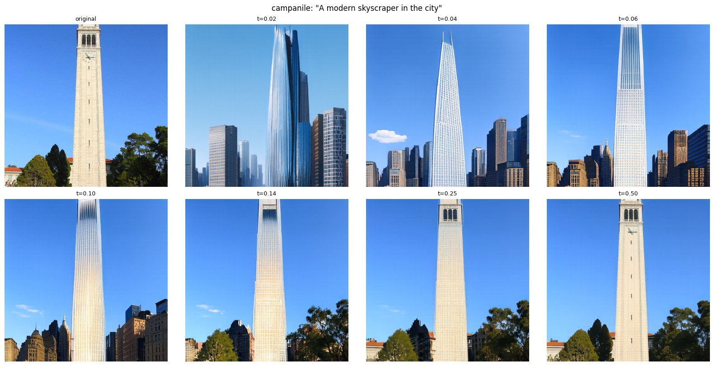
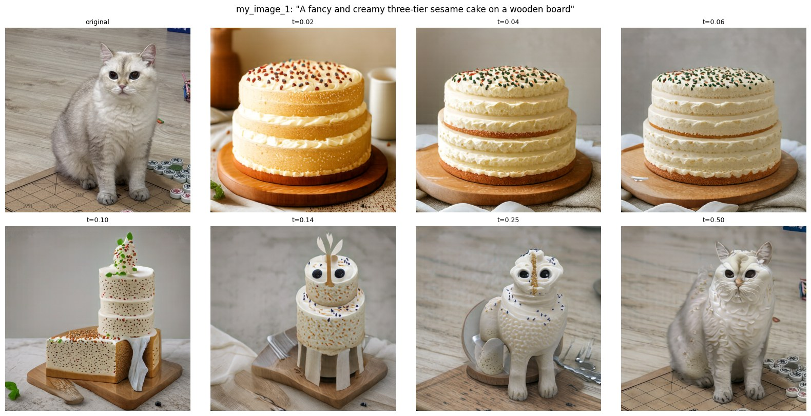
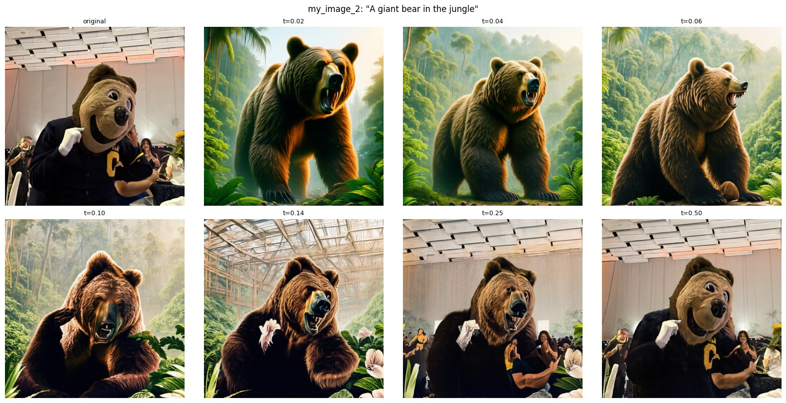
| Parameter | Value |
|---|---|
| Campanile prompt | A modern skyscraper in the city |
| Image #1 prompt | A fancy and creamy three-tier sesame cake on a wooden board |
| Image #2 prompt | A giant bear in the jungle |
| Starting times | 0.02, 0.04, 0.06, 0.10, 0.14, 0.25, 0.50 |
At 0.02–0.06 the prompt wins completely: the tower becomes a glass skyscraper and the cat becomes a cake. At 0.14–0.25 it's a mix, and my favorite is the cat-shaped cake at 0.25. At 0.50 the original mostly comes back.
For the bear, the best result is around 0.10–0.14, where the bear sits in a jungle but still has a pose similar to Oski's.
v = ( vcfg(x, t, p1) + F⁻¹ vcfg(F(x), t, p2) ) / 2, where F rotates 180°. Each panel shows the image upright with p1 (left) and rotated with p2 (right).
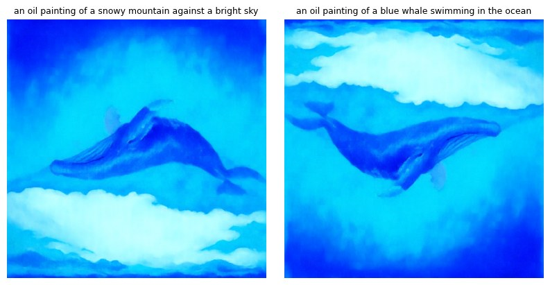
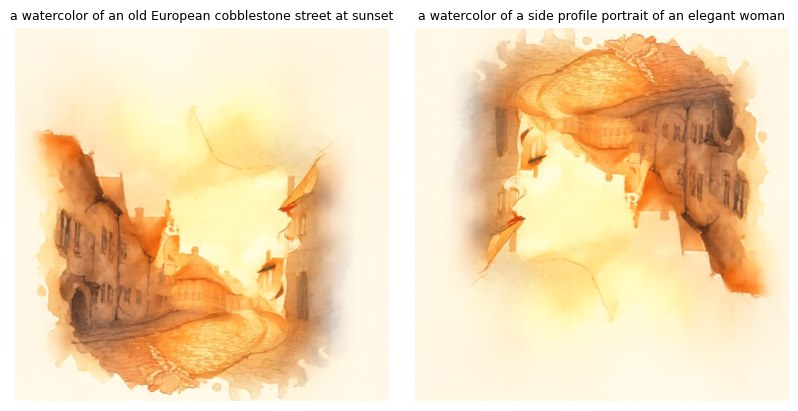
def visual_anagrams(noise, condition_a, condition_b, predict_velocity, w=7, step_size=0.02):
def v(x, t):
v_a = cfg_velocity(x, t, condition_a, w, predict_velocity, null_condition)
v_b = rotate180(cfg_velocity(rotate180(x), t, condition_b, w, predict_velocity, null_condition))
return (v_a + v_b) / 2
out, _ = euler_sample(noise, 0, step_size, v)
return out| Parameter | Value |
|---|---|
| Illusion #1 | upright: an oil painting of a snowy mountain against a bright sky / flipped: an oil painting of a blue whale swimming in the ocean (seed 180) |
| Illusion #2 | upright: a watercolor of an old European cobblestone street at sunset / flipped: a watercolor of a side profile portrait of an elegant woman (seed 181) |
| w / h | 7 / 0.02 |
Illusion #2 works well: the street turns into a woman's profile when flipped. Illusion #1 only half works: the whale is clear in both directions, but the snowy mountain isn't.
Low-pass of vcfg for the distant prompt plus (vcfg − low-pass) for the close prompt, used in every Euler update.
def lowpass(x, sigma=16.0):
kernel = 2 * round(16.5 * x.shape[-1] / 64) + 1
return gaussian_blur(x, [kernel, kernel], [sigma, sigma])
def make_hybrids(noise, condition_a, condition_b, predict_velocity, w=7, step_size=0.02):
def v(x, t):
v_a = cfg_velocity(x, t, condition_a, w, predict_velocity, null_condition)
v_b = cfg_velocity(x, t, condition_b, w, predict_velocity, null_condition)
return lowpass(v_a) + v_b - lowpass(v_b)
out, _ = euler_sample(noise, 0, step_size, v)
return out| Parameter | Value |
|---|---|
| Hybrid #1 | distant: a photo of a dog / close: a photo of a kitten |
| Hybrid #2 | distant: a lithograph of a skull / close: a lithograph of a waterfall |
| Low-pass | Gaussian blur, kernel 265, σ = 16 (at 512×512) |
| w / h | 7 / 0.02 |
Three extra transformations Fi, averaged with the identity view: negation (F(x) = −x), 90° rotation, and inner rotation (only the central circle is rotated). The velocity is the average of Fi⁻¹ vcfg(Fi(x), t, pi) over the views.
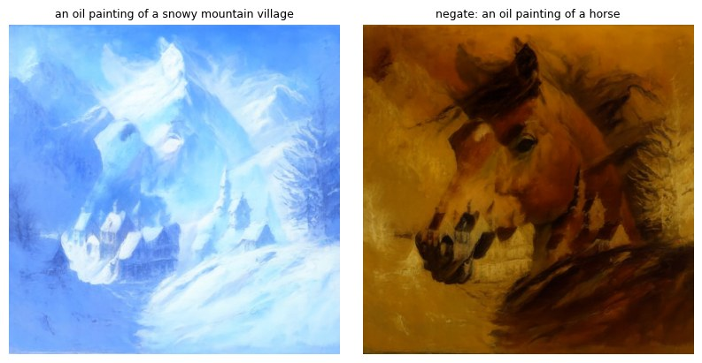
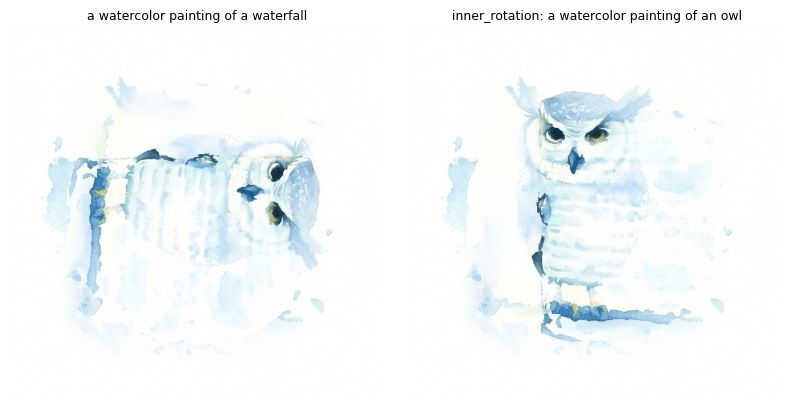
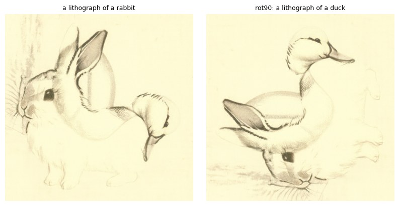
def make_negate():
f = lambda x: -x
return f, f
def make_rot90():
return (lambda x: torch.rot90(x, 1, (-2, -1)),
lambda x: torch.rot90(x, -1, (-2, -1)))
def make_inner_rotation(size=512, radius_frac=0.35):
c = torch.arange(size, dtype=torch.float32) + 0.5 - size / 2
yy, xx = torch.meshgrid(c, c, indexing="ij")
mask = ((xx**2 + yy**2) <= (radius_frac * size) ** 2).float().to(device)
def rot(x, k):
return x * (1 - mask) + torch.rot90(x, k, (-2, -1)) * mask
return (lambda x: rot(x, 1)), (lambda x: rot(x, -1))
def multi_view_anagram(noise, conditions, views, predict_velocity, w=7, step_size=0.02):
"""v(x,t) = mean_i F_i^{-1}( v_cfg(F_i(x), t, c_i) )"""
def v(x, t):
out = 0
for c, (F, F_inv) in zip(conditions, views):
out = out + F_inv(cfg_velocity(F(x), t, c, w, predict_velocity, null_condition))
return out / len(views)
result, _ = euler_sample(noise, 0, step_size, v)
return result| Parameter | Value |
|---|---|
| Negation | an oil painting of a snowy mountain village / an oil painting of a horse |
| Inner rotation | a watercolor painting of a waterfall / a watercolor painting of an owl |
| 90° rotation | a lithograph of a rabbit / a lithograph of a duck |
| w / h | 7 / 0.02 |
The 90° rotation one is the best: the rabbit and the duck are both easy to see. Negation also works. The snowy village is upright and a horse's head appears in the negated view. Inner rotation was the weakest, the waterfall was not obvious.
Text-guided image-to-image translation (same edit as 3.1) on the UC Berkeley seal.
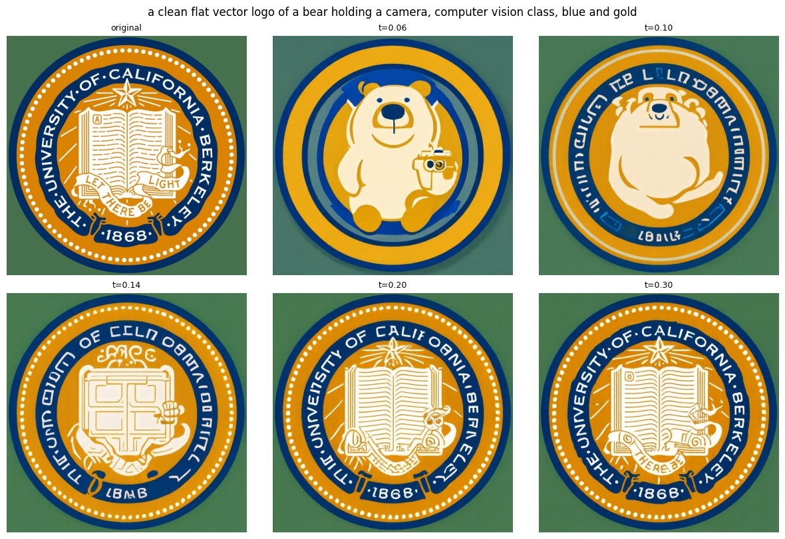
LOGO_PROMPT = "a clean flat vector logo of a bear holding a camera, computer vision class, blue and gold"
LOGO_STARTS = [0.06, 0.10, 0.14, 0.20, 0.30]
logos = {f"t={t:.2f}": edit(logo_src, noise(SEED), t, logo_c, predict_velocity, w=W, step_size=H)
for t in LOGO_STARTS}| Parameter | Value |
|---|---|
| Prompt | a clean flat vector logo of a bear holding a camera, computer vision class, blue and gold |
| Starting times | 0.06, 0.10, 0.14, 0.20, 0.30 |
| Chosen | t = 0.06 |
| w / h / seed | 7 / 0.02 / 180 |
At 0.10 and 0.14 the seal's letters get garbled, and at 0.20 and 0.30 it's almost the original seal. So I used t = 0.06 as my final logo.
The starting time t is basically a dial for "how much of my image do I keep". Small t gives the model freedom to make something new, large t keeps the original, and in the middle you get the fun edits. CFG did a similar thing for the prompt: it made images cleaner and more on-prompt, but also made them look more alike.
It also surprised me that one step already gives a clean image, and that Euler's extra steps mainly added sharp detail instead of lowering the MSE.
Training my own flow matching model on MNIST: first a single-step denoiser, then a time-conditioned and a class-conditioned flow matching UNet. Colab, Tesla T4, seed 180.
The unconditional UNet from Figure 1: two DownBlocks (28→14→7), Flatten (7×7 average pool → 1×1), Unflatten (back to 7×7), two UpBlocks, and skip connections by channel-wise concat.
class Conv(nn.Module):
def __init__(self, in_channels: int, out_channels: int):
super().__init__()
self.net = nn.Sequential(
nn.Conv2d(in_channels, out_channels, kernel_size=3, stride=1, padding=1),
nn.BatchNorm2d(out_channels),
nn.GELU(),
)
def forward(self, x: torch.Tensor) -> torch.Tensor:
return self.net(x)
class DownConv(nn.Module):
def __init__(self, in_channels: int, out_channels: int):
super().__init__()
self.net = nn.Sequential(
nn.Conv2d(in_channels, out_channels, kernel_size=3, stride=2, padding=1),
nn.BatchNorm2d(out_channels),
nn.GELU(),
)
def forward(self, x: torch.Tensor) -> torch.Tensor:
return self.net(x)
class UpConv(nn.Module):
def __init__(self, in_channels: int, out_channels: int):
super().__init__()
self.net = nn.Sequential(
nn.ConvTranspose2d(in_channels, out_channels, kernel_size=4, stride=2, padding=1),
nn.BatchNorm2d(out_channels),
nn.GELU(),
)
def forward(self, x: torch.Tensor) -> torch.Tensor:
return self.net(x)
class Flatten(nn.Module):
def __init__(self):
super().__init__()
self.net = nn.Sequential(nn.AvgPool2d(kernel_size=7), nn.GELU())
def forward(self, x: torch.Tensor) -> torch.Tensor:
return self.net(x)
class Unflatten(nn.Module):
def __init__(self, in_channels: int):
super().__init__()
self.net = nn.Sequential(
nn.ConvTranspose2d(in_channels, in_channels, kernel_size=7, stride=7, padding=0),
nn.BatchNorm2d(in_channels),
nn.GELU(),
)
def forward(self, x: torch.Tensor) -> torch.Tensor:
return self.net(x)
class ConvBlock(nn.Module):
def __init__(self, in_channels: int, out_channels: int):
super().__init__()
self.net = nn.Sequential(Conv(in_channels, out_channels), Conv(out_channels, out_channels))
def forward(self, x: torch.Tensor) -> torch.Tensor:
return self.net(x)
class DownBlock(nn.Module):
def __init__(self, in_channels: int, out_channels: int):
super().__init__()
self.net = nn.Sequential(DownConv(in_channels, out_channels), ConvBlock(out_channels, out_channels))
def forward(self, x: torch.Tensor) -> torch.Tensor:
return self.net(x)
class UpBlock(nn.Module):
def __init__(self, in_channels: int, out_channels: int):
super().__init__()
self.net = nn.Sequential(UpConv(in_channels, out_channels), ConvBlock(out_channels, out_channels))
def forward(self, x: torch.Tensor) -> torch.Tensor:
return self.net(x)class UnconditionalUNet(nn.Module):
def __init__(
self,
in_channels: int,
num_hiddens: int,
):
super().__init__()
D = num_hiddens
self.conv_in = ConvBlock(in_channels, D) # (D, 28, 28)
self.down1 = DownBlock(D, D) # (D, 14, 14)
self.down2 = DownBlock(D, 2 * D) # (2D, 7, 7)
self.flatten = Flatten() # (2D, 1, 1)
self.unflatten = Unflatten(2 * D) # (2D, 7, 7)
self.up1 = UpBlock(4 * D, D) # cat(unflatten, down2) -> (D, 14, 14)
self.up2 = UpBlock(2 * D, D) # cat(up1, down1) -> (D, 28, 28)
self.conv_out = ConvBlock(2 * D, D) # cat(up2, conv_in) -> (D, 28, 28)
self.head = nn.Conv2d(D, in_channels, kernel_size=3, padding=1)
def forward(self, x: torch.Tensor) -> torch.Tensor:
assert x.shape[-2:] == (28, 28), "Expect input shape to be (28, 28)."
h0 = self.conv_in(x)
h1 = self.down1(h0)
h2 = self.down2(h1)
u = self.unflatten(self.flatten(h2))
u = self.up1(torch.cat([u, h2], dim=1))
u = self.up2(torch.cat([u, h1], dim=1))
u = self.conv_out(torch.cat([u, h0], dim=1))
return self.head(u)| Parameter | Value |
|---|---|
| Conv | 3×3 conv + BatchNorm + GELU, same resolution |
| DownConv | 3×3 conv, stride 2 + BatchNorm + GELU |
| UpConv | 4×4 transposed conv, stride 2 + BatchNorm + GELU |
| Flatten | AvgPool 7×7 → GELU |
| Unflatten | 7×7 transposed conv, stride 7 + BatchNorm + GELU |
| Hidden channels D | 128 for the denoiser, 64 for the flow models |
z = x + σε. The UNet Dθ(z) is trained to predict the clean x with an MSE loss.
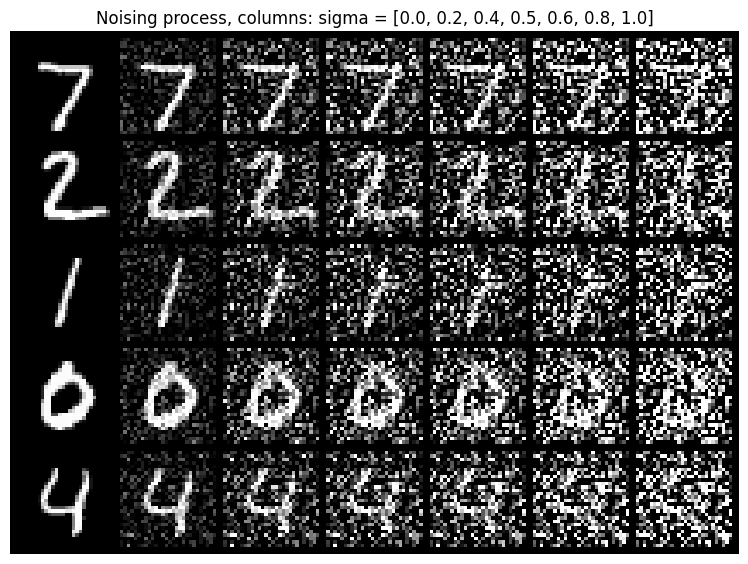
More σ means more noise, as expected. At σ = 0.5 I can still read the digits. At σ = 0.8 and 1.0 I can only tell the digit from a few bright pixels.
Trained on σ = 0.5, MNIST training set only, fresh noise for every batch.
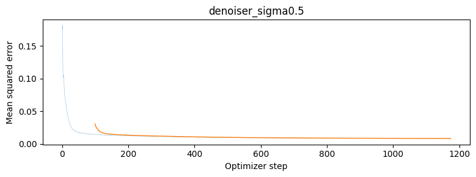
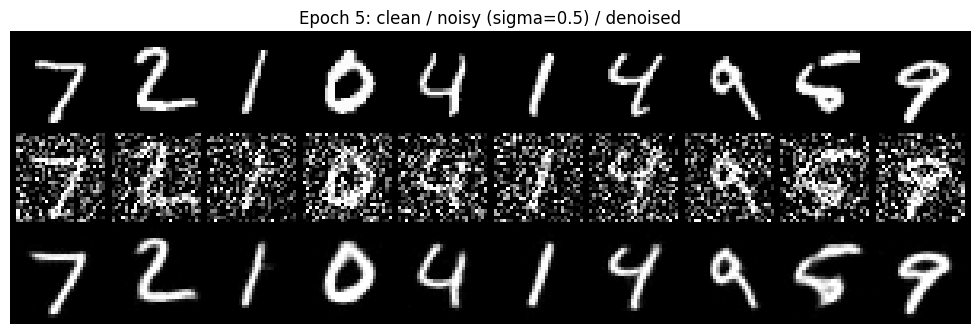
for epoch in range(5):
for images, _ in train_loader:
noisy = images + 0.5 * torch.randn_like(images) # fresh noise every batch
loss = criterion(model(noisy), images)
optimizer.zero_grad(); loss.backward(); optimizer.step()| Parameter | Value |
|---|---|
| Model | UnconditionalUNet, D = 128 |
| σ | 0.5 |
| Batch size | 256 (shuffled) |
| Optimizer | Adam, lr = 1e-4 |
| Epochs | 5 |
| Loss | MSE between the denoised output and the clean image |
| Seed | 180 |
The loss drops very fast in the first ~100 steps and then slowly goes down to about 0.01. After epoch 1 the digits are already clean, but some are smudgy (like the 5 and one of the 9s). After epoch 5 the strokes are sharper and closer to the clean ones.
The σ = 0.5 denoiser on the same test digits with other noise levels.
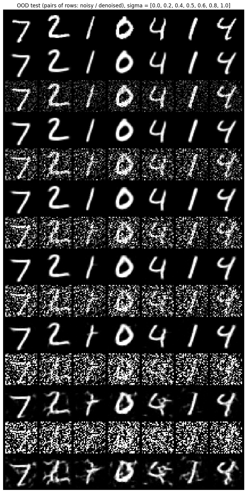
For σ = 0.0 to 0.5 the result is good, even for σ below 0.5 which the model never saw (the output is just clean). At σ = 0.6 it still works but a few strokes are weaker, like the middle of the 2. At σ = 0.8 and 1.0 it breaks: strokes get cut, extra blobs appear, and the digits turn into messy shapes. The model only learned to remove noise of one strength, so it doesn't generalize to noisier inputs.
Same training as 1.2.1, but the input is pure noise z = ε and the target is still a clean digit.
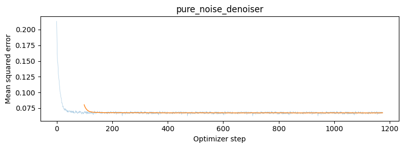
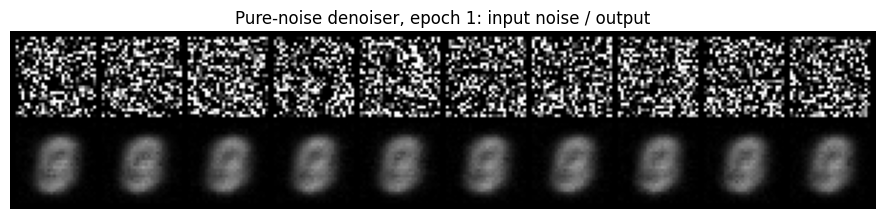
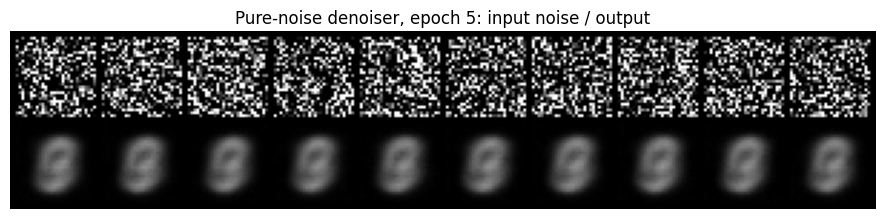
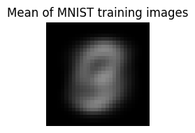
for images, _ in make_loader(256, seed=SEED):
z = torch.randn_like(images) # input is pure noise
loss = F.mse_loss(noise_model(z), images)| Parameter | Value |
|---|---|
| Model | UnconditionalUNet, D = 128 |
| Input | z ~ N(0, I), no clean image |
| Batch size / lr / epochs | 256 / 1e-4 / 5 |
| Seed | 180 |
Relation to digits 0–9: the blob is not any one digit. It looks like all of them overlaid, and it looks like the mean MNIST image shown above.
Why: the noise has nothing to do with which digit is the target, so the input has no information. With MSE loss the best the model can do is output the point with the smallest average squared distance to all the training digits, which is their mean. The loss also goes flat almost right away, at about 0.07, since there's nothing more to learn.
Now the model predicts the flow u = x1 − x0 instead of the clean image. A scalar t in [0, 1] goes through FCBlocks and multiplies the unflatten output (t1) and the up1 output (t2).
class FCBlock(nn.Module):
def __init__(self, in_channels: int, out_channels: int):
super().__init__()
self.net = nn.Sequential(
nn.Linear(in_channels, out_channels),
nn.GELU(),
nn.Linear(out_channels, out_channels),
)
def forward(self, x: torch.Tensor) -> torch.Tensor:
return self.net(x)
class TimeConditionalUNet(nn.Module):
def __init__(
self,
in_channels: int,
num_classes: int,
num_hiddens: int,
):
super().__init__()
D = num_hiddens
self.conv_in = ConvBlock(in_channels, D)
self.down1 = DownBlock(D, D)
self.down2 = DownBlock(D, 2 * D)
self.flatten = Flatten()
self.unflatten = Unflatten(2 * D)
self.up1 = UpBlock(4 * D, D)
self.up2 = UpBlock(2 * D, D)
self.conv_out = ConvBlock(2 * D, D)
self.head = nn.Conv2d(D, in_channels, kernel_size=3, padding=1)
self.fc1_t = FCBlock(1, 2 * D) # unflatten (2D channels)
self.fc2_t = FCBlock(1, D) # up1 (D channels)
def forward(
self,
x: torch.Tensor,
t: torch.Tensor,
) -> torch.Tensor:
assert x.shape[-2:] == (28, 28), "Expect input shape to be (28, 28)."
t = t.float().view(-1, 1)
t1 = self.fc1_t(t)[:, :, None, None]
t2 = self.fc2_t(t)[:, :, None, None]
h0 = self.conv_in(x)
h1 = self.down1(h0)
h2 = self.down2(h1)
u = self.unflatten(self.flatten(h2)) * t1
u = self.up1(torch.cat([u, h2], dim=1)) * t2
u = self.up2(torch.cat([u, h1], dim=1))
u = self.conv_out(torch.cat([u, h0], dim=1))
return self.head(u)| Parameter | Value |
|---|---|
| FCBlock | Linear → GELU → Linear |
| t1 | FCBlock(1, 2D), multiplies the unflatten output |
| t2 | FCBlock(1, D), multiplies the up1 output |
Algorithm B.1: xt = (1 − t)x0 + t x1 with x0 ~ N(0, I), t ~ U[0, 1], loss ‖(x1 − x0) − uθ(xt, t)‖².
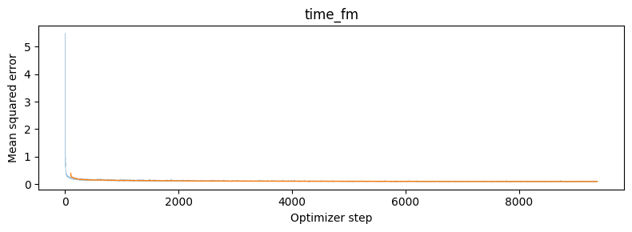
def time_fm_forward(
unet: TimeConditionalUNet,
x_1: torch.Tensor,
num_ts: int,
) -> torch.Tensor:
unet.train()
x_0 = torch.randn_like(x_1)
t = torch.rand(x_1.shape[0], device=x_1.device) # t ~ U[0,1]
tt = t.view(-1, 1, 1, 1)
x_t = (1 - tt) * x_0 + tt * x_1
return F.mse_loss(unet(x_t, t), x_1 - x_0)def train_fm(fm, name, num_epochs=10, lr=1e-2, use_scheduler=True, class_cond=False,
save_epochs=(1, 5, 10), batch_size=64):
fm = fm.to(device)
opt = torch.optim.Adam(fm.parameters(), lr=lr)
sched = torch.optim.lr_scheduler.ExponentialLR(opt, gamma=0.1 ** (1.0 / num_epochs)) if use_scheduler else None
loader = make_loader(batch_size, seed=SEED)
losses, ckpts = [], {}
for epoch in range(num_epochs):
for images, labels in tqdm(loader, desc=f'{name} epoch {epoch+1}/{num_epochs}'):
images = images.to(device, non_blocking=True)
loss = fm(images, labels.to(device)) if class_cond else fm(images)
opt.zero_grad(); loss.backward(); opt.step()
losses.append(loss.item())
if sched is not None:
sched.step()
if epoch + 1 in save_epochs:
ckpts[epoch + 1] = copy.deepcopy(fm.unet.state_dict())
torch.save(ckpts[epoch + 1], OUT / f'{name}_epoch{epoch+1}.pt')
loss_plot(losses, name)
return losses, ckpts| Parameter | Value |
|---|---|
| Model | TimeConditionalUNet, D = 64 |
| Batch size | 64 (shuffled), fresh noise each batch |
| Optimizer | Adam, initial lr = 1e-2 |
| Scheduler | ExponentialLR, γ = 0.11/10, stepped once per epoch |
| Epochs | 10 (9,380 steps) |
| Seed | 180 |
Algorithm B.2: start from x0 ~ N(0, I) and take 50 Euler steps from t = 0 to t = 1. Same initial noise (seed 180) for all three epochs.
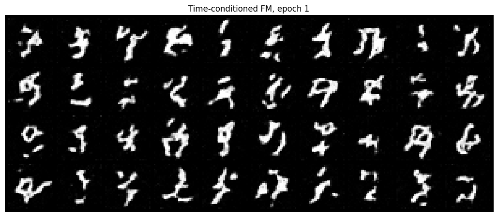
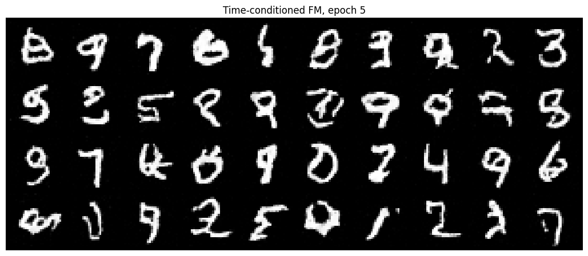
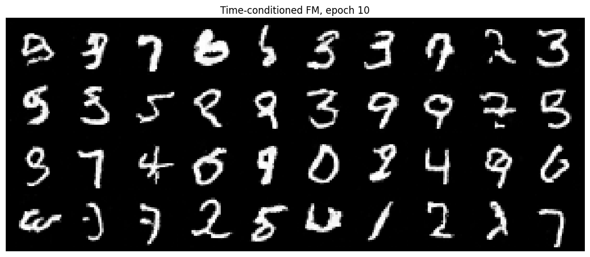
def sample_time_fm(unet, num_ts=50, num_samples=40, seed=SEED):
unet.eval()
g = torch.Generator(device=device).manual_seed(seed)
x = torch.randn((num_samples, 1, 28, 28), generator=g, device=device) # x_0 ~ N(0, I)
dt = 1.0 / num_ts
for i in range(num_ts): # Euler: t = 0 -> 1
t = torch.full((num_samples,), i * dt, device=device)
x = x + dt * unet(x, t)
return x| Parameter | Value |
|---|---|
| Euler steps | 50 (dt = 0.02) |
| Samples | 40 |
| Seed | 180 |
At epoch 1 the samples are scribbles that don't look like digits. At epoch 5 many look like digits (a 9, a 7, a 4, a 0), but a lot are still weird. At epoch 10 the shapes are cleaner but still not great: some are half-digits. Since the model doesn't know which digit to draw, it sometimes mixes two of them.
Two more FCBlocks (four in total: fc1_t, fc1_c, fc2_t, fc2_c). The class is a one-hot vector c and is zeroed out with probability 0.1 during training (classifier-free dropout). unflatten = c1 · unflatten + t1, up1 = c2 · up1 + t2.
class ClassConditionalUNet(nn.Module):
def __init__(
self,
in_channels: int,
num_classes: int,
num_hiddens: int,
):
super().__init__()
D = num_hiddens
self.num_classes = num_classes
self.conv_in = ConvBlock(in_channels, D)
self.down1 = DownBlock(D, D)
self.down2 = DownBlock(D, 2 * D)
self.flatten = Flatten()
self.unflatten = Unflatten(2 * D)
self.up1 = UpBlock(4 * D, D)
self.up2 = UpBlock(2 * D, D)
self.conv_out = ConvBlock(2 * D, D)
self.head = nn.Conv2d(D, in_channels, kernel_size=3, padding=1)
self.fc1_t = FCBlock(1, 2 * D)
self.fc2_t = FCBlock(1, D)
self.fc1_c = FCBlock(num_classes, 2 * D)
self.fc2_c = FCBlock(num_classes, D)
def forward(
self,
x: torch.Tensor,
c: torch.Tensor,
t: torch.Tensor,
mask: Optional[torch.Tensor] = None,
) -> torch.Tensor:
assert x.shape[-2:] == (28, 28), "Expect input shape to be (28, 28)."
c = F.one_hot(c.long(), self.num_classes).float()
if mask is not None:
c = c * mask.float().view(-1, 1)
t = t.float().view(-1, 1)
c1 = self.fc1_c(c)[:, :, None, None]
c2 = self.fc2_c(c)[:, :, None, None]
t1 = self.fc1_t(t)[:, :, None, None]
t2 = self.fc2_t(t)[:, :, None, None]
h0 = self.conv_in(x)
h1 = self.down1(h0)
h2 = self.down2(h1)
u = c1 * self.unflatten(self.flatten(h2)) + t1
u = c2 * self.up1(torch.cat([u, h2], dim=1)) + t2
u = self.up2(torch.cat([u, h1], dim=1))
u = self.conv_out(torch.cat([u, h0], dim=1))
return self.head(u)def class_fm_forward(
unet: ClassConditionalUNet,
x_1: torch.Tensor,
c: torch.Tensor,
p_uncond: float,
num_ts: int,
) -> torch.Tensor:
unet.train()
N = x_1.shape[0]
x_0 = torch.randn_like(x_1)
t = torch.rand(N, device=x_1.device)
tt = t.view(-1, 1, 1, 1)
x_t = (1 - tt) * x_0 + tt * x_1
mask = (torch.rand(N, device=x_1.device) >= p_uncond).float()
return F.mse_loss(unet(x_t, c, t, mask), x_1 - x_0)| Parameter | Value |
|---|---|
| Class input | one-hot, 10 classes |
| puncond | 0.1 (c set to 0) |
Same recipe as 2.2 (D = 64, batch size 64, Adam lr 1e-2, ExponentialLR, 10 epochs), plus the class vector.
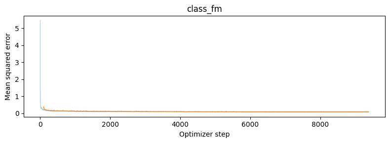
| Parameter | Value |
|---|---|
| Model | ClassConditionalUNet, D = 64 |
| Batch size / epochs | 64 / 10 |
| Optimizer | Adam, initial lr = 1e-2 |
| Scheduler | ExponentialLR, γ = 0.11/10 |
| puncond | 0.1 |
| Seed | 180 |
Algorithm B.4 with classifier-free guidance, u = uu + γ (uc − uu), γ = 5, 300 Euler steps. Each grid has 4 instances of each digit (columns are digits 0–9), same seed for all epochs.
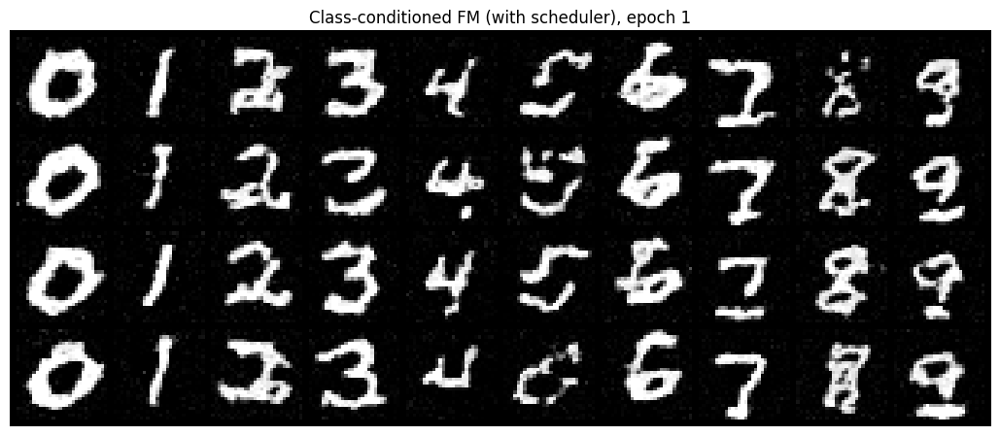
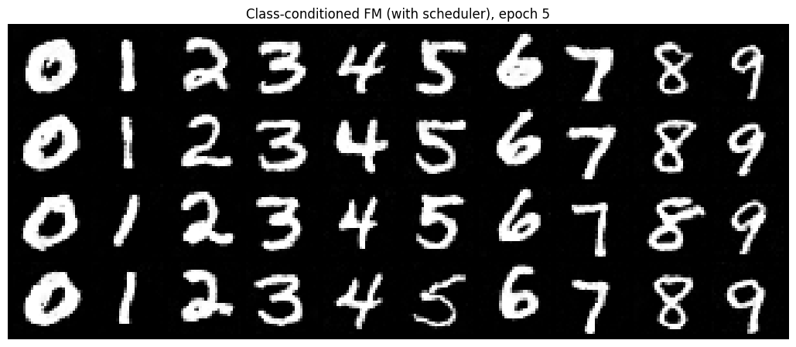
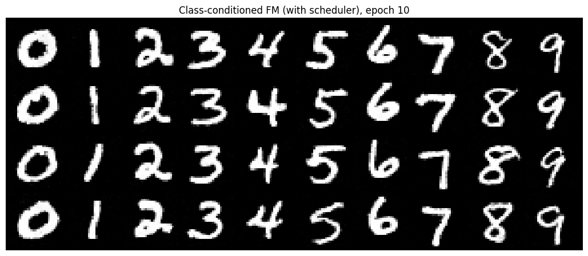
def class_fm_sample(
unet: ClassConditionalUNet,
c: torch.Tensor,
img_wh: tuple[int, int],
num_ts: int,
guidance_scale: float = 5.0,
seed: int = 0,
) -> torch.Tensor:
unet.eval()
dev = next(unet.parameters()).device
c = c.to(dev)
N = c.shape[0]
g = torch.Generator(device=dev).manual_seed(seed)
x = torch.randn((N, 1, *img_wh), generator=g, device=dev)
ones, zeros = torch.ones(N, device=dev), torch.zeros(N, device=dev)
dt = 1.0 / num_ts
cache_every = max(1, num_ts // 30)
caches = [x.cpu()]
for i in range(num_ts):
t = torch.full((N,), i * dt, device=dev)
u_c = unet(x, c, t, ones)
u_u = unet(x, c, t, zeros)
u = u_u + guidance_scale * (u_c - u_u)
x = x + dt * u
if (i + 1) % cache_every == 0 or i == num_ts - 1:
caches.append(x.cpu())
return x, torch.stack(caches, dim=1)| Parameter | Value |
|---|---|
| Guidance scale γ | 5.0 |
| Euler steps | 300 |
| Samples | 4 per digit, 40 total |
| Seed | 180 |
At epoch 1 the right digit is already there, but some are shaky (the 5, 8 and 9 especially). By epoch 5 all 40 look like clean digits, and epoch 10 is just a bit sharper and more consistent. Each column is the digit I asked for, so the conditioning works.
Retrained the class-conditioned model without ExponentialLR, with a constant learning rate instead.
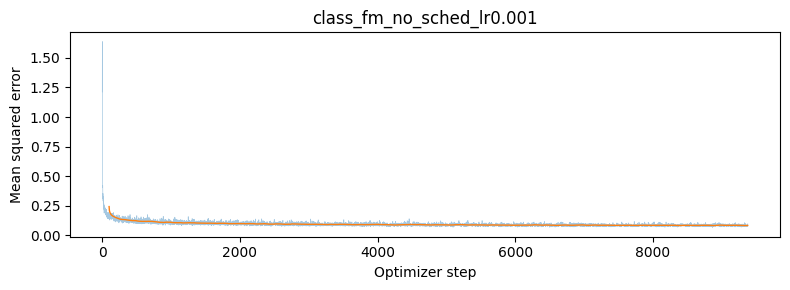
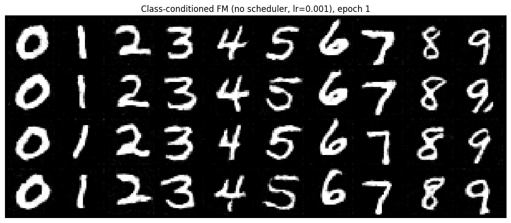
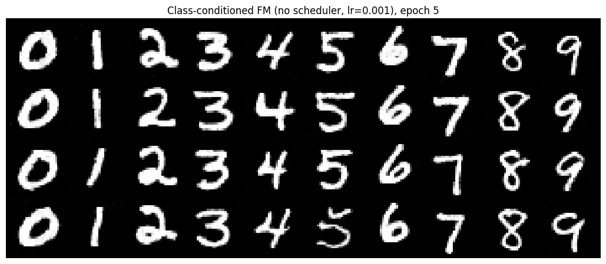
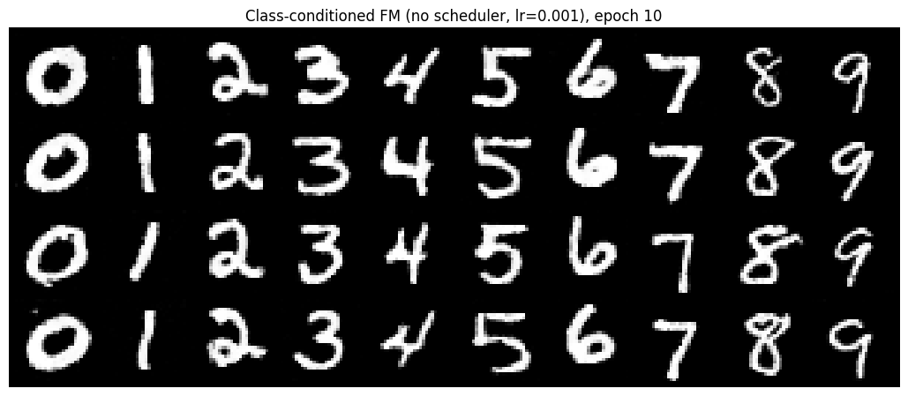
| Parameter | Value |
|---|---|
| Learning rate | constant 1e-3 (instead of 1e-2 decaying by 0.1 over training) |
| Everything else | same as 2.5 |
| Final avg loss (last 500 steps), with scheduler | 0.0848 |
| Final avg loss (last 500 steps), no scheduler | 0.0853 |
The only change was the learning rate. The scheduler takes lr from 1e-2 down to 1e-3 over the 10 epochs, so I picked a constant 1e-3, the value it ends at. I expected a constant 1e-2 to be too big for the model to settle down at the end, and this value is small enough to train stably from the start.
The final loss is basically the same (0.0853 vs 0.0848) and the epoch 5 and 10 samples look about as good as with the scheduler. The epoch 1 samples are actually cleaner without it, probably because the scheduler version still runs at lr ≈ 1e-2 in the first epoch, which is noisy. The raw loss curve without the scheduler is a bit noisier since the lr never decays.
The time-only UNet from 2.3 produces a lot of weird digits. I made it better in three ways.
1. Wider network: D from 64 to 128.
2. Scale and shift: t used to only multiply features. Now it also adds a shift, and it is injected at a third place (up2) as well: x = x * scale(t) + shift(t) after unflatten, up1 and up2.
3. Longer training: 10 → 20 epochs, same schedule as before (Adam lr 1e-2, ExponentialLR, batch size 64).
class TimeConditionalUNetPlus(TimeConditionalUNet):
def __init__(self, in_channels: int, num_classes: int, num_hiddens: int):
super().__init__(in_channels, num_classes, num_hiddens)
D = num_hiddens
self.fc1_s = FCBlock(1, 2 * D)
self.fc2_s = FCBlock(1, D)
self.fc3_t = FCBlock(1, D)
self.fc3_s = FCBlock(1, D)
def forward(self, x, t):
t = t.float().view(-1, 1)
e = lambda fc: fc(t)[:, :, None, None]
h0 = self.conv_in(x)
h1 = self.down1(h0)
h2 = self.down2(h1)
u = self.unflatten(self.flatten(h2)) * e(self.fc1_t) + e(self.fc1_s)
u = self.up1(torch.cat([u, h2], 1)) * e(self.fc2_t) + e(self.fc2_s)
u = self.up2(torch.cat([u, h1], 1)) * e(self.fc3_t) + e(self.fc3_s)
u = self.conv_out(torch.cat([u, h0], 1))
return self.head(u)| Parameter | Value |
|---|---|
| Original | D = 64, scale only (2 injections), 10 epochs |
| Improved | D = 128, scale + shift (3 injections), 20 epochs |
| Sampling | 50 Euler steps, 40 samples, seed 180 |
Because the starting noise is the same, I can compare image by image. It's better, but it's still not as clean as the class-conditioned model, and a few samples are still strange. I think that's because without the class label the model has to decide the digit by itself, so some samples land in between two digits.
The pure-noise experiment helped me understand why flow matching needs the interpolation xt and the time t: a model with no information in its input just outputs the average. Giving it xt and t turns that one hard jump into many small easy steps. Class conditioning with guidance then made a big difference in sample quality, much more than training longer did for the time-only model.